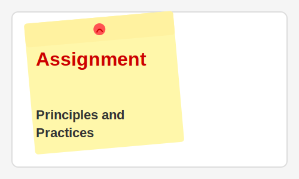

Week 1: Principles and Practices
In this first week of Fab Academy, we explored the fundamental principles that guide the Fab Lab network and the essential practices in digital fabrication. This assignment helped establish a strong foundation for all the work that follows.
Key Learning Outcomes
- Understanding the history and philosophy of the Fab Lab movement
- Learning about distributed manufacturing and open-source hardware/software
- Exploring the capabilities of the fab lab and its equipment
- Setting up documentation structures and workflows
- Planning the final project trajectory
Assignment Deliverables
For this assignment, I had to:
- Create a personal website to document all Fab Academy work
- Describe the final project idea and trajectory
- Document the process of website creation
Documentation Process
I created this website using HTML and CSS, focusing on making it responsive and easy to navigate. The goal was to create a platform where I could effectively document my learning journey throughout the Fab Academy program.
The website serves as a living portfolio of my work, allowing visitors to follow my progress and understand the processes behind each assignment and the final project.